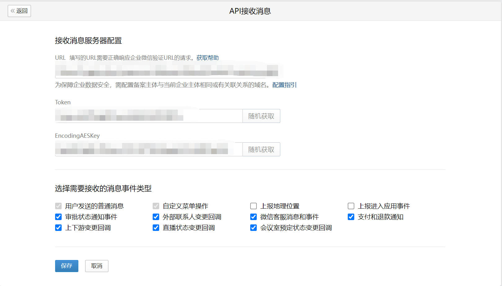

目录
为了能够让自建应用和企业微信进行双向通信，企业可以在应用的管理后台开启接收消息模式。
开启接收消息模式的企业，需要提供可用的接收消息服务器URL（建议使用https）。
开启接收消息模式后，用户在应用里发送的消息会推送给企业后台。此外，还可配置地理位置上报等事件消息，当事件触发时企业微信会把相应的数据推送到企业的后台。
企业后台接收到消息后，可在回复该消息请求的响应包里带上新消息，企业微信会将该被动回复消息推送给用户。
在企业的管理端后台，进入需要设置接收消息的目标应用，点击“接收消息”的“设置API接收”按钮，进入配置页面。配置回调参数以及选择需要接收的事件类型。

要求填写应用的URL、Token、EncodingAESKey三个参数
这三个参数的用处在 加解密方案说明 章节会介绍，此处不用细究。
当点击“保存”提交以上信息时，企业微信会发送一条验证消息到填写的URL，发送方法为GET。
企业的接收消息服务器接收到验证请求后，需要作出正确的响应才能通过URL验证。
企业在获取请求时需要做Urldecode处理，否则可能会验证不成功
你可以访问接口调试工具进行调试，依次选择 建立连接 > 接收消息。
假设接收消息地址设置为：https://api.3dept.com/，企业微信将向该地址发送如下验证请求：
请求方式：GET
请求地址：https://api.3dept.com/?msg_signature=ASDFQWEXZCVAQFASDFASDFSS×tamp=13500001234&nonce=123412323&echostr=ENCRYPT_STR
参数说明
| 参数 | 必须 | 说明 |
|---|---|---|
| msg_signature | 是 | 企业微信加密签名，msg_signature结合了企业填写的token、请求中的timestamp、nonce参数、加密的消息体 |
| timestamp | 是 | 时间戳 |
| nonce | 是 | 随机数 |
| echostr | 是 | 加密的字符串。需要解密得到消息内容明文，解密后有random、msg_len、msg、receiveid四个字段，其中msg即为消息内容明文 |
企业后台收到请求后，需要做如下操作：
以上2~3步骤可以直接使用验证URL函数一步到位。
之后接入验证生效，接收消息开启成功。
开启接收消息模式后，企业微信会将消息发送给企业填写的URL，企业后台需要做正确的响应。
假设企业的接收消息的URL设置为https://api.3dept.com。
请求方式：POST
请求地址 ：https://api.3dept.com/?msg_signature=ASDFQWEXZCVAQFASDFASDFSS×tamp=13500001234&nonce=123412323
接收数据格式 ：
xml数据格式：
<xml> <ToUserName><![CDATA[toUser]]></ToUserName> <AgentID><![CDATA[toAgentID]]></AgentID> <Encrypt><![CDATA[msg_encrypt]]></Encrypt> </xml>点击复制
参数说明
| 参数 | 说明 |
|---|---|
| ToUserName | 企业微信的CorpID，当为第三方套件回调事件时，CorpID的内容为suiteid |
| AgentID | 接收的应用id，可在应用的设置页面获取 |
| Encrypt | 消息结构体加密后的字符串 |
企业收到消息后，需要作如下处理：
以上1~2步骤可以直接使用解密函数一步到位。
3步骤其实包含加密被动回复消息、生成新签名、构造被动响应包三个步骤，可以直接使用加密函数一步到位。
被动响应包的数据格式：
xml格式：
<xml> <Encrypt><![CDATA[msg_encrypt]]></Encrypt> <MsgSignature><![CDATA[msg_signature]]></MsgSignature> <TimeStamp>timestamp</TimeStamp> <Nonce><![CDATA[nonce]]></Nonce> </xml>点击复制
参数说明
| 参数 | 是否必须 | 说明 |
|---|---|---|
| Encrypt | 是 | 经过加密的消息结构体 |
| MsgSignature | 是 | 消息签名 |
| TimeStamp | 是 | 时间戳 |
| Nonce | 是 | 随机数，由企业自行生成 |
企业微信在回调企业指定的URL时，是通过特定的IP发送出去的。如果企业需要做防火墙配置，那么可以通过这个接口获取到所有相关的IP段。
请求方式：GET（HTTPS）
请求地址： https://qyapi.weixin.qq.com/cgi-bin/getcallbackip?access_token=ACCESS_TOKEN
参数说明：
| 参数 | 必须 | 说明 |
|---|---|---|
| access_token | 是 | 调用接口凭证 |
权限说明：
无限定。
返回结果：
{ "errcode": 0, "errmsg": "ok", "ip_list": ["101.226.103.*", "101.226.62.*"] }点击复制
参数说明：
| 参数 | 说明 |
|---|---|
| ip_list | 企业微信回调的IP段 |